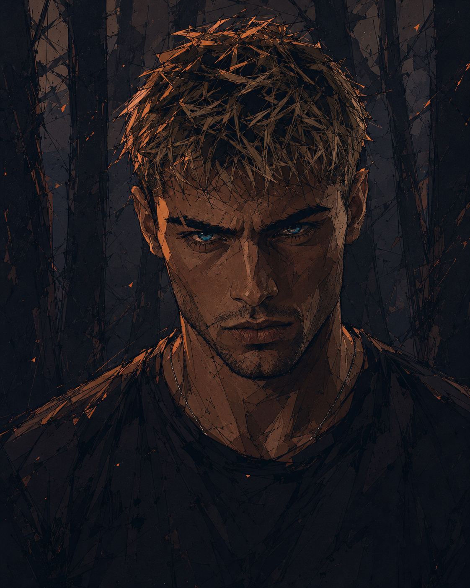
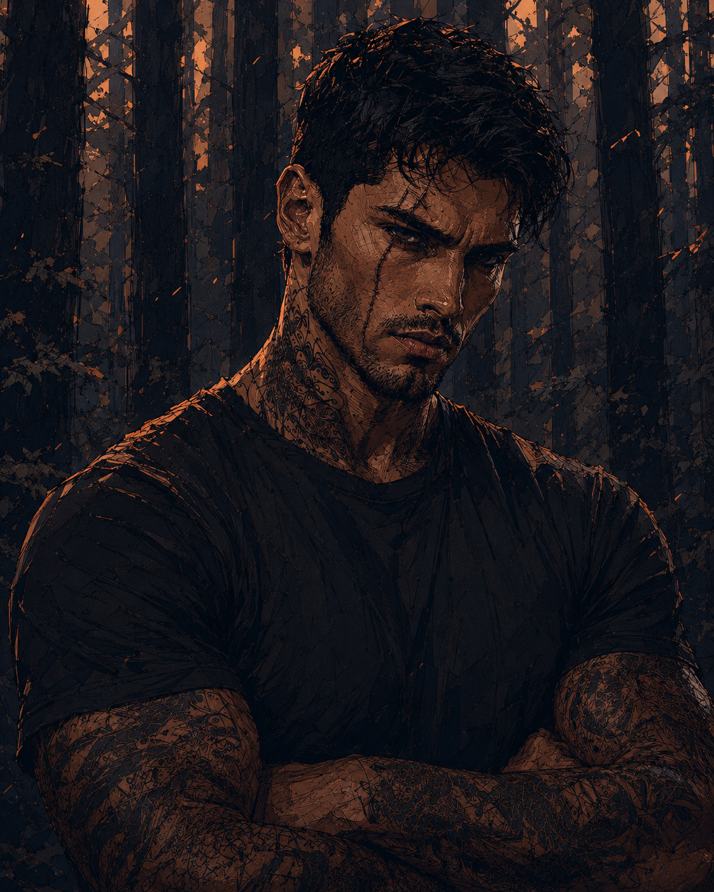

File 001
Lethea Vale

Alter: 25
Charakter: stur · zurückhaltend · sarkastisch · loyal
Position: Kadettin
Status: Active
FILE NOTES: Psychisch instabil infolge eines schweren Traumas.
Hochintelligent. Potenziell gefährlich.
Weitere Beobachtung empfohlen.
„Ich schwor mir, dass ich mich rächen würde. Irgendwann. Irgendwie.
Dass ich so hart trainierte, um zu der Person zu werden, die sie nie wieder brechen könnten.“
File 002
Elian Calder

Alter: 28
Charakter: provokant · charmant · selbstbewusst · unberechenbar
Position: Commander
Status: Active
FILE NOTES: Dient als rechte Hand des Reapers.
Seine Loyalität ihm gegenüber scheint absolut.
Sein Verhalten bleibt jedoch bisweilen unberechenbar.
„Ich zwinge meine Muskeln zur Ruhe, atme tief ein und forme ein Lächeln.
Das Lächeln, das ich so selbstverständlich trage, als wäre es echt. Doch in Wahrheit ist es meist nur Fassade.
Berechnend. Kalt.“
File 003
Kail Morrow

Alter: 33
Charakter: gefährlich · kontrolliert · loyal · ruhig
Position: General
Status: Active
FILE NOTES: Auch bekannt als „Reaper“.
Zweithöchste Autorität innerhalb der NWO. Extrem gefährlich.
Verhalten und Absichten sind kontinuierlich zu überwachen.
„Der Tod und ich sind alte Bekannte.
Ich habe in meinem Leben bereits so viele Seelen in die Verdammnis geschickt, dass eine weitere keinen Unterschied mehr macht.
Genauso wenig wie die zehn Leichen, die den Schnee um mich herum bereits rot färben.
Blutrot.“